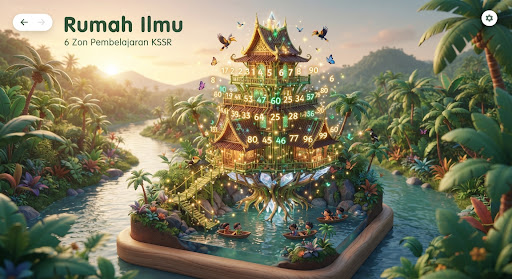
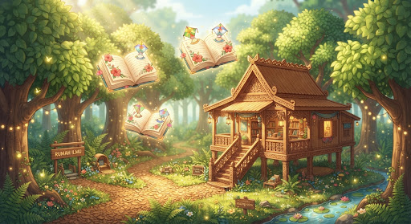
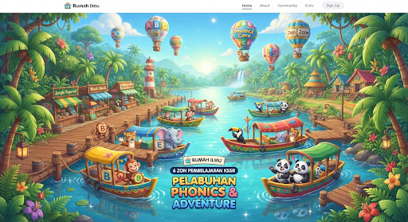
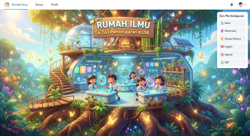
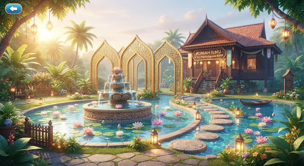
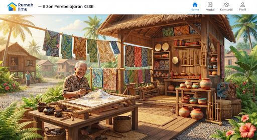

"Jom selesaikan cabaran Menara Nombor untuk bina jambatan buluh baharu!"
Rumah Ilmu Kampung Wira
Pilih Rumah Ilmu untuk mulakan cabaran pengembaraan Tahun 1!

Menara Nombor
Nombor Hingga 100 • Tambah Cepat • Bentuk 3D Geometri

Pustaka Rimba
Vokal & Konsonan • Suku Kata Ceria • Dongeng Sang Kancil

Adventure Bay
Phonics Safari • Action Words • Family & Friends in the Jungle

Makmal Alam
Benda Hidup & Bukan • 5 Deria • Haiwan Jinak Rimba

Taman Harmoni
Adab Ibu Bapa • Amalan Baik • Doa & Budi Pekerti

Bengkel Batik
Corak Batik Tradisional • Garisan Ceria • Kompang & Angklung
Kostum Pendekar Cilik Rimau